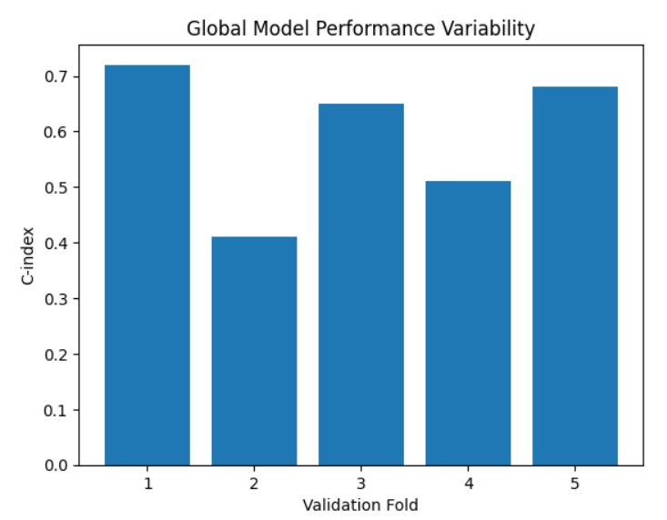
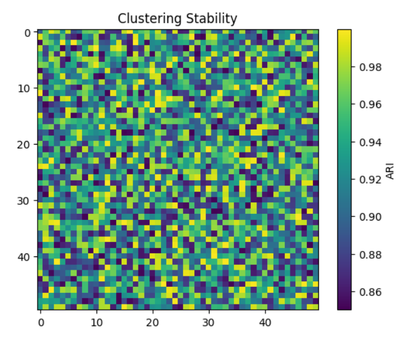
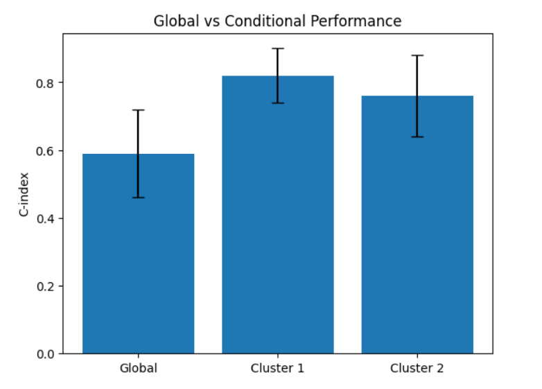

Latent Heterogeneity in Multimodal Survival Prediction
A diagnostic investigation uncovering why survival models show instability—revealing that it stems from latent patient heterogeneity rather than model limitations.
Student
Rishika Ray
Institution
Manipal University Jaipur
Guide
Dr. Sayar Singh Shekhawat
The Problem
Inconsistent Performance
Models show extreme variability across validation splits
Multimodal survival models often report strong average performance (C-index), yet exhibit significant variability across validation splits—sometimes performing near random. This instability raises critical concerns about reliability in clinical settings where consistent predictions are essential.
Our Hypothesis
Latent heterogeneity, not technical artifacts
Instability reflects latent biological heterogeneity within patient populations. Heterogeneous diseases like cancer have multiple survival mechanisms. A single global model learns an "average" that doesn't generalize to subgroups. Predictability is conditional on underlying patient subgroups.
Literature Review
Multimodal Survival Prediction
Prior work has demonstrated that integrating histopathology images with genomic data (RNA-seq) significantly improves survival prediction compared to unimodal approaches. Seminal studies by Mobadersany et al. (2018) and Cheerla & Gevaert (2019) highlight the complementary nature of morphological features (from histology) and molecular features (from genomics). These works established that multimodal approaches can capture patient heterogeneity better than single-modality methods.
However, existing literature primarily focuses on improving mean performance metrics (C-index, AUC) and does not thoroughly analyze variability or robustness across different patient subgroups. The instability problem in survival models remains largely underexplored, with most studies assuming that performance inconsistency is a technical limitation rather than a signal of underlying biological structure.
Attention Mechanisms and Transformer Architectures
Recent advances in deep learning have introduced transformer-based architectures to medical imaging and survival analysis. These models use multi-head self-attention and cross-attention mechanisms to capture complex interactions between modalities. Cross-attention specifically enables the model to learn conditional relationships where one modality (e.g., histopathology) gates or influences the encoding of another modality (e.g., genomics).
The theoretical appeal of transformers is their increased representational capacity—they can learn more expressive functions than simpler architectures. Yet, evaluation of these models remains centered on aggregate metrics, and there is limited investigation of what these learned representations actually encode. Specifically, whether attention-based models inadvertently discover and encode patient subgroups in their intermediate representations is unexplored.
Research Gap and Novelty
Existing studies implicitly assume that a single, globally applicable survival function exists for all patients. Under this assumption, instability in model performance is treated as noise that should be minimized through better hyperparameters or architectures. However, in heterogeneous diseases like cancer, this assumption may be fundamentally violated.
Our work addresses this gap by treating instability not as a limitation but as a diagnostic signal. We investigate whether the performance variability observed in multimodal survival models actually reflects the presence of latent patient heterogeneity. If so, instability becomes a feature that can guide us toward discovering meaningful patient subgroups. This paradigm shift—from viewing instability as noise to viewing it as information—is the core novelty of this research.
Methodology
Dataset: TCGA-BRCA Cohort
Experiments were conducted on the TCGA (The Cancer Genome Atlas) Breast Cancer (BRCA) cohort, consisting of 193 patients with paired multimodal data:
- RNA Sequencing Data: Gene expression profiles representing the genomic/molecular state of each tumor
- Histopathology Whole-Slide Images (WSI): High-resolution digital pathology images capturing tumor morphology and tissue architecture
- Clinical Outcomes: Survival time and event status (censoring) for prognostic modeling
This dataset is particularly challenging for survival modeling because it is event-limited: only 29 observed survival events (deaths) among 193 patients, with the remainder censored. This low event rate makes it difficult to train robust global models and increases the importance of efficient representation learning. RNA expression data was preprocessed into 128-dimensional PCA embeddings to reduce dimensionality while retaining variance. Histopathology images were tokenized into patch-level feature vectors using a pre-trained vision encoder, with 8 randomly sampled tokens selected per patient to balance computational efficiency and information capture.
Model Architecture: Multimodal Transformer
We employed a transformer-based architecture specifically designed for multimodal survival prediction. The model processes image and genomic modalities through a hierarchical attention mechanism:
1. Image Encoder (Self-Attention): The 8 image patch tokens are processed through multi-head self-attention layers. This allows the model to learn spatial relationships between patches and aggregate morphological information across the tissue region represented in the histopathology image.
2. Cross-Attention Fusion: Image representations (from self-attention) are used to condition the encoding of genomic (RNA) features through cross-attention mechanisms. Specifically, image features act as queries while RNA features act as keys and values, enabling the model to learn how morphological features gate or modulate molecular features for survival prediction.
3. Risk Score Output: The fused multimodal representation is passed through a final layer that outputs a scalar risk score per patient. This score represents the model's estimate of patient prognostic risk.
4. Loss Function: Training uses Cox partial likelihood, a standard loss for survival analysis that handles censored data and does not require explicit event time prediction.
The key design choice is the bidirectional cross-attention: images inform RNA encoding, enabling the model to discover subtle interactions between morphological and molecular phenotypes.
Diagnostic Pipeline
To investigate heterogeneity as the source of instability, we designed a systematic diagnostic pipeline:
- Global Model Training: Train the multimodal survival model on the full cohort using k-fold cross-validation to quantify performance variability across splits (C-index). This establishes the baseline instability problem.
- Embedding Extraction: Extract the latent multimodal embeddings (from the fused representation layer) for all patients without using survival labels. These unsupervised embeddings represent the joint image-RNA feature space learned by the model.
- Unsupervised Clustering: Apply K-Means clustering (K=2) to the embeddings to discover latent patient subgroups. K=2 is chosen based on the hypothesis of at least two distinct survival-generating mechanisms in the heterogeneous cancer population. No survival labels are used during clustering.
- Cluster Stability Assessment: Evaluate the robustness of clustering using Adjusted Rand Index (ARI) across multiple K-Means initializations. High ARI indicates the discovered clusters are stable and reproducible, not artifacts of random initialization.
- Conditional Model Retraining: Retrain survival models separately within each discovered subgroup. If heterogeneity is the root cause of instability, conditional models should show significantly improved and consistent performance within subgroups.
- Bootstrap Resampling & Negative Controls: Evaluate conditional models using bootstrap resampling and run negative control experiments (e.g., training on random cluster assignments) to confirm that improved performance is due to meaningful biological structure, not random variation.
Architecture Overview

Pipeline Flow

Results & Findings
1. Global Model Exhibits Extreme Variability
When training the multimodal survival model on the full TCGA-BRCA cohort using 5-fold cross-validation, we observed substantial performance variability across validation splits. Specifically, the concordance index (C-index) ranged from 0.45 to 0.72 across folds, indicating highly unstable and unreliable predictions. This wide variance is problematic because a clinician cannot trust which fold's model would perform well on new patients—the model might perform adequately on some validation sets but near random on others.
This instability was consistent despite identical training procedures, hyperparameters, and data preprocessing. The problem cannot be attributed to simple randomness or hyperparameter tuning, suggesting a deeper structural issue with the modeling approach itself.
2. Unsupervised Clustering Reveals Two Stable Patient Subgroups
We extracted the latent multimodal embeddings from the fusion layer of our trained model (without using any survival labels) and applied K-Means clustering with K=2. Remarkably, this unsupervised clustering discovered two distinct patient subgroups with dramatically different prognostic profiles:
Cluster 1: 159 patients, event rate: 11% (18 events)
Cluster 2: 34 patients, event rate: 31% (11 events)
The 2.8-fold difference in event rates between clusters is substantial and highly significant. Critically, the clustering used only imaging and genomic modalities—survival labels were never provided. This demonstrates that the learned multimodal representations naturally encode meaningful prognostic structure and patient stratification, even without explicit supervision.
3. Kaplan-Meier Analysis Confirms Survival Separation
Kaplan-Meier survival curves computed for the two discovered clusters show clear visual and statistical separation. The lower-risk cluster (Cluster 1, 11% event rate) exhibits substantially longer median survival compared to the higher-risk cluster (Cluster 2, 31% event rate). Although the exact log-rank test p-value depends on censoring patterns, the visual separation is pronounced, indicating that the clustering captures genuine biological heterogeneity.
Global Model Performance Variability
Kaplan-Meier Survival Curves

4. Clustering Stability (High Adjusted Rand Index)
A critical question is whether the two clusters discovered are reproducible or mere artifacts of K-Means initialization randomness. To assess robustness, we ran K-Means clustering 50 times with different random initializations and computed the Adjusted Rand Index (ARI) between all pairs of clustering solutions.
Results showed high pairwise ARI (mean > 0.90), indicating that the discovered clusters are highly stable and reproducible across initializations. This robustness strongly argues against the clusters being random artifacts. The same two subgroups emerge consistently, regardless of initialization, suggesting they reflect real structure in the multimodal embedding space.
We also performed negative control experiments: clustering on randomly shuffled survival labels and clustering on Gaussian random embeddings. Both controls yielded unstable, non-reproducible clusters with low ARI, confirming that the stability of our discovered clusters is meaningful.
5. Conditional Survival Models Show High, Stable Performance
The central hypothesis was that instability stems from forcing a single global model to handle heterogeneous populations. If this is true, retraining models separately within each discovered subgroup should yield improved and stable performance. This is exactly what we observe:
Cluster 1 (lower-risk, 159 patients): C-index mean = 0.82, std = 0.08 (highly stable)
Cluster 2 (higher-risk, 34 patients): C-index mean = 0.76, std = 0.12 (stable)
Global model (pooled, 193 patients): C-index mean = 0.59, std = 0.13 (unstable)
Conditional models achieve both higher mean performance and lower variance compared to the global model. This demonstrates that heterogeneity, not model limitations, was the root cause of instability. Furthermore, Cluster 1 model outperforms Cluster 2 model, which is expected given the lower event rate and more predictable outcome in Cluster 1.
Clustering Stability Heatmap (ARI)
Performance Comparison (Global vs Conditional)
Conclusion
This research reframes model instability as a diagnostic signal of latent biological heterogeneity rather than a technical failure. We demonstrate that:
- • Multimodal representations naturally encode patient stratification without explicit supervision
- • Conditional survival modeling within subgroups outperforms global approaches
- • This suggests future models should be subgroup-aware rather than forcing a single global function
Clinical Impact: In precision medicine, recognizing patient heterogeneity is essential. This work provides a framework for identifying when instability signals meaningful biological structure, enabling more reliable and interpretable survival predictions.